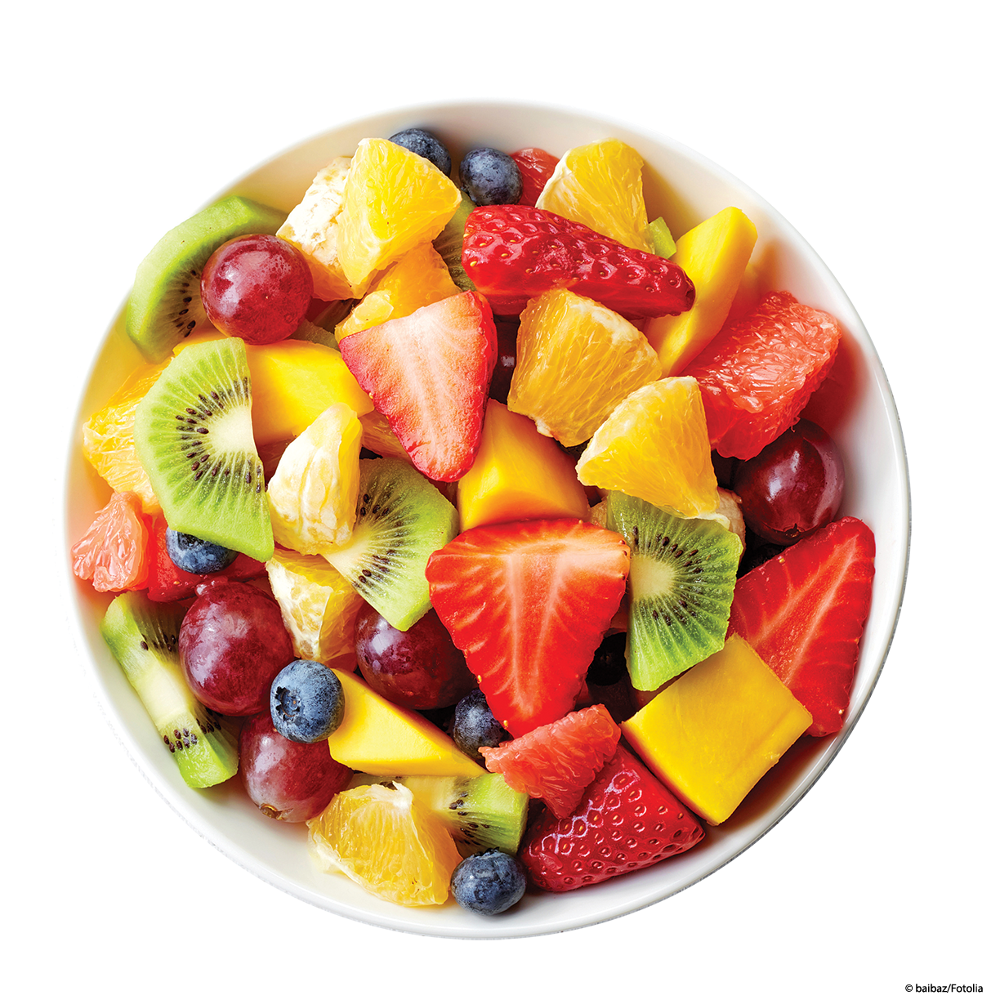
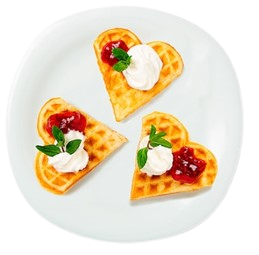
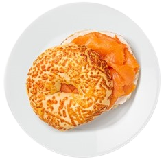
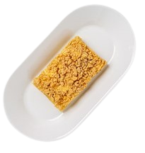
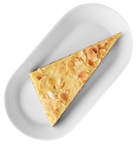
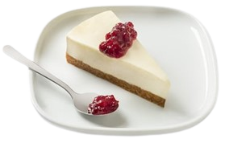
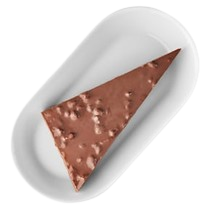

POSTRES MENÚ
|  Vaso de Fruta $20 |
La fruta se corta en pedazos pequeños y se coloca en capas en el vaso, de modo que se crea un efecto visual atractivo y apetecible. Las frutas más comunes que se utilizan para este tipo de vaso son fresas, kiwis, plátanos, piñas, mangos, uvas y melones. |  Croissant $15 |
El croissant es un alimento muy versátil y se puede disfrutar solo o acompañado de diferentes rellenos, como mermelada, queso, jamón, salmón ahumado, chocolate o almendras. También se puede encontrar en variedades saladas como el croissant de jamón y queso, y dulces como el croissant de chocolate. |
|  Pan Dulce $12 |
El pan dulce es un tipo de pan elaborado con una masa dulce que contiene ingredientes como azúcar, huevos, leche, mantequilla y a menudo frutos secos o frutas confitadas. Es una variedad de pan que se consume comúnmente como postre o como acompañamiento para el desayuno o la merienda. |  Waffles Dulces $39 |
Los waffles dulces tienen una textura crujiente por fuera y suave por dentro. Se pueden disfrutar solos o con diferentes acompañamientos dulces, como jarabe de arce, miel, mermelada, crema batida, frutas frescas o siropes de frutas. |
|  Bagel con Salmón $79 |
El bagel con salmón es un popular desayuno o brunch que consiste en un bagel cortado por la mitad y tostado, con una capa de queso crema untado en la superficie y cubierto con salmón ahumado, cebolla roja en rodajas y hojas de eneldo fresco. |  Pastel de Manzana $29 |
El sabor y aroma de la canela y la dulzura natural de las manzanas se combinan para hacer del pastel de manzana una deliciosa opción para cualquier momento del día, desde el postre hasta el desayuno o la merienda. Además, es una excelente manera de utilizar las manzanas de temporada y aprovechar su sabor y valor nutricional. |
|  Pastel de Zanahoria $29 |
El pastel de zanahoria se elabora mezclando zanahorias ralladas con ingredientes como huevos, azúcar, aceite vegetal, harina, polvo de hornear, canela y vainilla. A menudo, también se agregan nueces picadas y pasas para darle un sabor y textura adicionales. |  Pastel de Almendras $29 |
El pastel de almendras es un postre rico y delicado, con un sabor suave y ligeramente dulce. Está hecho principalmente con almendras, que le dan una textura suave y húmeda, y una mezcla de ingredientes como huevos, azúcar, mantequilla y harina. |
|  Cheesecake $49 |
El cheesecake o pastel de queso es un postre cremoso y delicioso hecho con queso crema, huevos, azúcar y una base de galletas o masa quebrada. El queso crema le da una textura suave y cremosa, mientras que la base de galletas o masa le aporta una textura crujiente y un sabor complementario. |  Pastel Almendras con Caramelo $49 |
La base del pastel de almendras con caramelo es similar a la del pastel de almendras estándar, que consiste en una masa suave y homogénea hecha con almendras molidas, huevos, azúcar y mantequilla. Sin embargo, el toque especial viene del caramelo, que se agrega como una capa superior cremosa y pegajosa que se mezcla con los sabores suaves y dulces del pastel. |